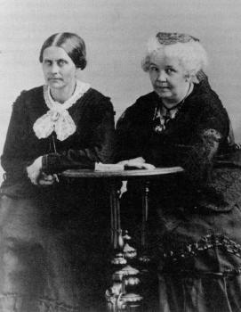

|
The Women's National Loyal League was a political
association of women in support of the Union war effort
during the Civil War. Thousands of women worked to help
Federal troops by participating in the activities of the
United States Sanitary Commission and United States
Christian Commission and local soldiers' aid societies. The
hospital clothes they made and the fruits and vegetables
they packed for shipment to the front symbolized traditions
of domesticity females usually assumed during the nineteenth
century. However, a growing number of women tried to support
the war effort by operating in the political sphere
dominated by men.
Most Northerners understood that slavery helped cause the
Civil War and that resolution of the conflict depended on
settling the questions about the position of African
Americans. The debate on slavery allowed some women to
assume purely political roles in their war work. They
determined that the restoration of the Union depended on the
emancipation of African Americans and began to plan a
campaign in support of that end, calling upon women from all
loyal states to join them at a convention to form the
Women's National Loyal League. The meeting took place at New
York's Church of the Puritans on May 14, 1863.
The drive toward emancipation for slaves undertaken that
day built on earlier work done by women and on associations
that men organized to support the Lincoln administration.
Women used the power of the petition to exert their
influence in matters pertaining to abolition as early as the
|

Suffrage activists Susan B. Anthony (left) and Elizabeth Cady Stanton
were among the driving forces behind the founding of the Women's National Loyal
League.
|
1830s. They collected signatures on documents supporting
various resolutions and then sent the material to sponsoring
Congressmen. During the Civil War, men who supported the
Republican administration formed Union League Clubs. These
groups tried to convince citizens to support the war effort
and to undercut the influence of Copperheads and Peace
Democrats. At the same time women founded their own Union
League Clubs. Like Soldiers' Aid Societies these groups used
traditional, domestic approaches to support the government.
By reducing their consumption of food and textiles, needed
commodities were available for the military.
The Women's National Loyal League wanted to recognize and
give moral support to the traditional work of aid societies
while remaining focused on support of the government through
political action. Women from more than a half dozen states
attended the first meeting. The most prominent members of
the women's movement for full citizenship rights played
important roles. Lucy Stone presided and Elizabeth Cady
Stanton, Susan B. Anthony, Angelina Grimke Weld, Ernestine
Rose, and Antoinette Brown Blackwell took part in the
debates. The leaders announced the goal of collecting one
million signatures on a petition calling for the
emancipation of "all persons of African descent held in
involuntary service in the United States."
Not all women favored the obvious political aims of the
leaders and objected to the feminist nature of the
gathering. They believed that Lincoln needed the support of
women in order to restore the Union, but felt it more
appropriate to maintain a traditional role for women. They
favored conservation of household goods, a focus on
stimulating patriotism, and direct support of soldiers
through things like writing letters to the men. When the
leaders of the convention refused to alter their plans, many
of the conservative delegates withdrew.
Despite such objections, the organizers created a
national association. Membership cost a one-dollar fee and
allowed members to wear the League's pin which had the
figure of a slave whose chains had been broken and the
words, "In Emancipation is national unity." The initial goal
of mere emancipation for slaves changed as a result of
violence against African Americans and others during the New
York City Draft Riots in 1863. Following those events the
Loyal League petitioned for citizenship for all Africans
Americans.
By 1864 the group had over 5,000 members. Senator Charles
Sumner of Massachusetts presented their documents to the
political leaders. Their work resulted in more than 20,000
petitions with over 400,000 signatures. Although their
labors did not lead directly to full citizenship for
African-Americans or women, the Women's National Loyal
League, born in war and trained in the political battle for
emancipation, gave women experience in the political world
from which they would gain full citizenship rights.
Source: Joan Waugh, ed., Facts on File Encyclopedia of American
History: Civil War and Reconstruction, 1856 to 1869 (New York: Facts on
File, 2003), 396-397.
|